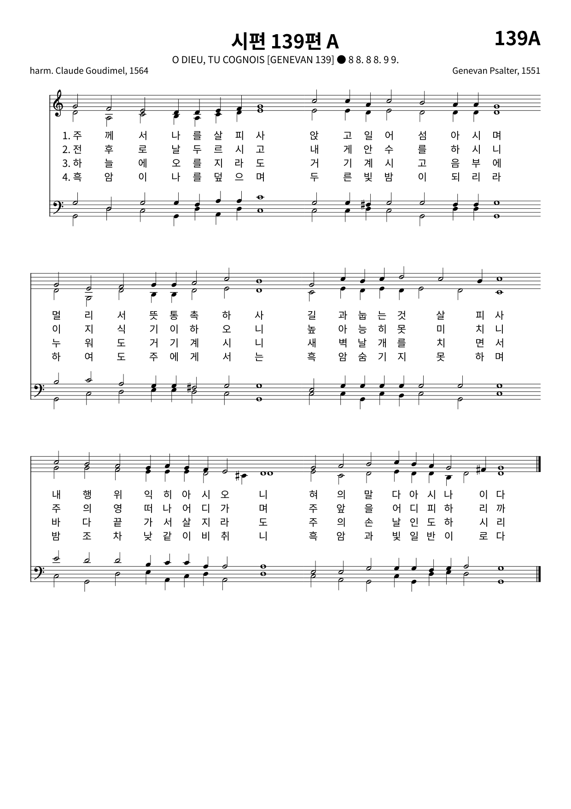

시편 139편 A
O DIEU, TU COGNOIS [GENEVAN 139] · 8 8. 8 8. 9 9.
곡조: Genevan Psalter, 1551 · 화성: Claude Goudimel, 1564 · 가사: 개역한글판 시편 139편 편역(AI 초벌 편역판 · 신학 감수 전) · 4절
시편 139편은 2곡으로 나누어 실었습니다: A B · 이 곡은 시편 139편 가사의 1~4번째 절입니다.
악보 PDF MusicXML(출력용) MusicXML(반주용, 전주·반복 포함) 개역한글 시편 139편 읽기
악보
← 시편 138편 목록반주 재생(준비 중)시편 139편 B →
가사
1절
주께서 나를 살피사
앉고 일어섬 아시며
멀리서 뜻 통촉하사
길과 눕는 것 살피사
내 행위 익히 아시오니
혀의 말 다 아시나이다
주께서 나를 살피사
앉고 일어섬 아시며
멀리서 뜻 통촉하사
길과 눕는 것 살피사
내 행위 익히 아시오니
혀의 말 다 아시나이다
2절
전후로 날 두르시고
내게 안수를 하시니
이 지식 기이하오니
높아 능히 못 미치니
주의 영 떠나 어디 가며
주 앞을 어디 피하리까
전후로 날 두르시고
내게 안수를 하시니
이 지식 기이하오니
높아 능히 못 미치니
주의 영 떠나 어디 가며
주 앞을 어디 피하리까
3절
하늘에 오를지라도
거기 계시고 음부에
누워도 거기 계시니
새벽 날개를 치면서
바다 끝 가서 살지라도
주의 손 날 인도하시리
하늘에 오를지라도
거기 계시고 음부에
누워도 거기 계시니
새벽 날개를 치면서
바다 끝 가서 살지라도
주의 손 날 인도하시리
4절
흑암이 나를 덮으며
두른 빛 밤이 되리라
하여도 주에게서는
흑암 숨기지 못하며
밤조차 낮같이 비취니
흑암과 빛 일반이로다
흑암이 나를 덮으며
두른 빛 밤이 되리라
하여도 주에게서는
흑암 숨기지 못하며
밤조차 낮같이 비취니
흑암과 빛 일반이로다